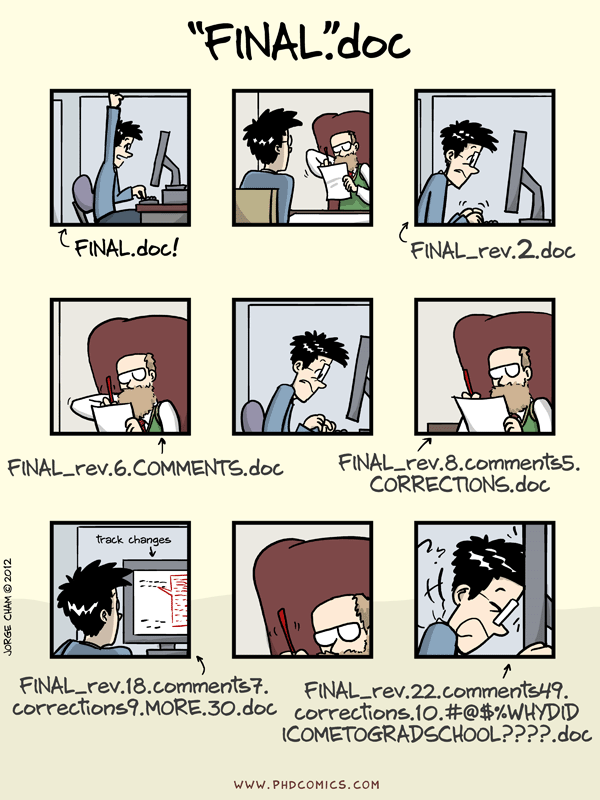

Just Git It
Do you get those nightmares that you do some revision in your code and it might not work but the code was working just fine in the previous version and now it's hard for you do go back. You are going to spend lots of hours in just figuring out what changes you had made. I used to have backup of code whenever I need to change it but still need to spend lot of time in comparing it. I also had trouble in saving those file in different location with different names and it put lots of mental burden (Just like the guy below from PhD Comics). But there is smart solution available - Git. Let's make most from it. You can find my presentation on git here
